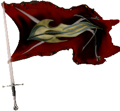
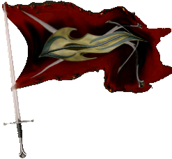

| Übersicht,
Anschläge und Stammtisch (RPG) |
|
Trauer um einen besonderen Mann
|
| Mordow (RIP) |
Er war ein Freund, ein wirklich besonderer Mann und ein würdiger Schwiegersohn.
Leb wohl, mein Freund
Graf Mordow,
Anführer der glorreichen Nation "Ritter der Tafelrunde",
Verlobter der reizenden Zorra
Zur 8. Stunde am 17.Erntemond im Jahre 425 |
25.07.06 1:41
 |
|
Norina á Chîroqué
   |
*steht mit Tränen am Grabe dieses besonderes Mannes*
Ich kannte dich noch nicht sehr lange und doch warst du in den vergangenen Zeiten wie ein Vater für mich. Ruhe in Frieden! Ich werde dich nie vergessen und auch stets Deiner geliebten Frau zur Seite stehen. Das Verspreche ich Dir.
*legt eine weiße Rose nieder und sucht die Hand von Aleya*
Leb wohl!!
Norina
Zur 11. Stunde am 20.Erntemond im Jahre 425 |
25.07.06 19:09
|
|
Otin ni Shim
  |
Der Tod ist nicht für die Verstorbenen schlimm, sondern nur für die Hinterbliebenen
Mein Beileid Aleya
*den schrecklichen Schmerz den Aleya empfinden muss nur zu gut kennt*
Otin ni Shim,
Netre ni î Cirolur
Zur 1. Stunde am 21.Erntemond im Jahre 425 |
25.07.06 22:38
|
|
Übersicht,
Anschläge und Stammtisch (RPG)
|